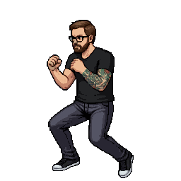
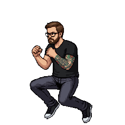
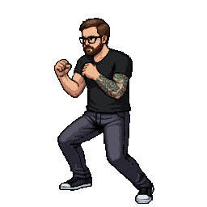

Play the four-frame recovery

Frames


A four-frame recovery from the jump’s low contact pose back to Todd’s ready stance. Frame 2 has a brief rebound with one boot lifted. The generated frames are shown with a shared ground baseline; the untouched PixelLab outputs are preserved alongside them.


